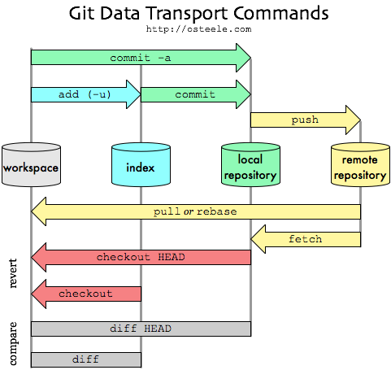

[ Working Directory (Workspace) | Staging Area (Index) | Local Repository ] → Remote Repository
GIT TYPE OF FILES:
Tracked and Untracked Files
Each file in your working directory can be in one of two states: trackedor untracked.
Tracked Files: files that were in the last snapshot, as well as any newly staged files. ▶ Unmodified ▶ Modified: tracked files that have been changed since the last commit. ▶ Staged
Untracked Files: any files in your working directory that were not in your last snapshot and are not in your staging area.
$ git status
On branch master
Untracked files:
(use "git add <file>..." to include in what will be committed)
test.txt
GIT COMMANDS:
Done:
git config (commands regarding the configuration of git)
git config –-global user.email 'email'(Change global user email)
git config –-global user.name ‘name’ (Change global user name)
git branch -a (see both local and remote branches)
$ git branch -a
hw1_Daniel_Trivino
hw2_Daniel_Trivino
* hw3_Daniel_Trivino | The * means this is the current branch
main
remotes/origin/HEAD -> origin/main
remotes/origin/HW-2-Qi-Zhang
remotes/origin/HW2-Amir-Mani
remotes/origin/HW2_Fengjie_Zhang
git checkout <branch name> (switch to a branch)
git checkout -b <branch name> (create a new branch and switch to it)
git branch -d <branch name> (delete a local branch)
Create a new local branch that tracks the remote branch and switch to it:
Push a local dev branch to create a Pull Request (PR)
Creating a pull request (PR) from a local branch to a GitHub repository is an essential part of collaborative development workflows. This process allows you to propose changes, have them reviewed, and then merged into a target branch (commonly the main or master branch). Here's a step-by-step guide to creating a pull request on GitHub:
Step 1:Commit and Push Your Local Changes
Before you create a pull request, you need to commit your changes to your local branch and then push the branch to the remote repository on GitHub.
Commit Your Changes Locally (Ensure all your changes are committed to your local branch).
git add .
git commit -m 'message'
Push Your Branch to GitHub: (Replace local-branch-name with the name of your local branch).
git push origin <local-branch-name>
Step 2: Create the Pull Request on GitHub
Step 3:Update Local Main Branch After Pull Request Merge
git checkout main
git pull origin main
Step 4:Update Other Local Branches and Push to Remote Dev
git checkout <local-branch-name>
git merge main
git push origin <local-branch-name>
git log (shows the historical commit which includes the authors and dates)
git clean (remove untracked files from the working tree)
git clean -f remove untracked files from the current path (not recursive)
git clean -df remove untracked files from the current path (recursive)
git reset (move files from staging area to the working directory) / git restore —staged achieves the same result
Soft Mode:
git reset --soft HEAD~<# of commits to remove> (move files with changes up to a given commit in the local repository back to the staging area - the commit is removed)
git reset --soft HEAD~<commit hash indicating prior commits to that hash will be removed> (the commit hash is a long number that identifies each commit and can be found with git log)
Hard More:
git reset --hard HEAD~<# of commits to remove> (removes changes up to a given commit without moving files to the staging area - revert changes up to a given commit and permanently delete the changes)
git reset --hard HEAD~<commit hash indicating prior commits to that hash will be removed> (the commit hash is a long number that identifies each commit and can be found with git log)
❗If we want to push the branch with the reset commit history we need to use the command: git push --force origin <branch you are pushing from>
git diff (review changes within working directory, staging area, and the local repository)
git diff (compare what’s in your working directory with what’s in your staging area - doesn’t return anything if working directory is empty - if staged area is empty, then it compares with last commit)
git diff –-staged /–-cached (compare what is in your staging area with what is in your last commit)
git show (shows the difference ‘diff’ between the last two commits)
merge
git merge <name of branch you are merging from> (join two or more development histories together - the current branch should be the one you are merging to)
Auto Merge: when all changes in the code occur on different lines or in different files, git will successfully merge commits without your help. Even if git can perform auto merge, you can do a Manual Merge insteadto make sure you are merging the right way - good practice:
git checkout master (on local repository - make sure you are on your local master branch)
git pull
git checkout dev_branch (change to the branch you want to merge)
git merge master -m ‘message’
When any change in the code occurs in common lines that have changes in the branch that you are merging to, there is a Merge Conflict:
$ git merge master -m 'merging to current branch'
<<<<<<<< HEAD
conflicting line(s) of code from branch you are trying to merge to/current branch
>>>>>>>> master
conflicting line(s) of code from branch you are trying to merge from/master
Fix the merge conflict:
Modify the conflicting line(s) to the final version after agreeing on the changes. Then you should get the following:
$ git status
On branch current
You have unmerged paths.
(fix conflicts and run 'git commit')
(use 'git merge --abort to abort the merge')
Unmerge paths:
(use 'git add <file>...' to mark resolution)
both modified: test.txt
$ git add .
$ git commit -m 'merge conflict addressed'
rebase and squash
Rebasing is the process of moving or combining a sequence of commits to a new base commit to maintain a linear project history.
Rebase:
git checkout master (on local repository - make sure you are on your local master branch)
git pull
git checkout dev_branch (change to the branch you want to merge)
git rebase master
Squash allows to combine multiple commits into one single commit - SQUASH AFTER REBASING OR WHEN BRANCH IS AHEAD
git checkout master (on local repository - make sure you are on your local master branch)
git pull
git checkout dev_branch (change to the branch you want to merge)
git rebase -i HEAD~<# of commits to squash> (-i means interactive and it allows to write a message in the terminal)
Change pick to squash in the last commit you’d like to combine - Press i to insert, ESC to finalize insertion, and then type :wq
git commit --amend -m ‘commit message’ (amend the tip of the current branch) - How to edit the last commit?
Make sure to have your changes to modify the last commit in the staging area
git commit --amend
Modify commit message in terminal. Press i to insert, ESC to finalize insertion, and then type :wq
NOTE: use git commit —amend -m ‘commit message’ to pass the new message and bypass the terminal insertion mode
git cherry-pick <commit hash/id> - How to move the commit from one branch to another?
One useful scenario is when there are multiple commits and one of them is required to be moved to another branch.
git checkout <branch you want to move the commit to> in the diagram below it would be hotfix branch
git cherry-pick <commit hash/id> in the diagram below it would be the hash/id of commit r
NOTE: if there is a merge conflict make sure to solve them and execute command: git cherry-pick —continue
git bisect (find by binary search the change that introduced a bug) - How to identify which commit caused an issue in the code?
git bisect start if using git bash as terminal - you’ll see as branch (current branch|BISECTING)
git bisect bad <commit hash/id>
git bisect good <commit hash/id>
# --- OUTPUT ---
Bisecting: 1/NUMBER revision left to test after this (roughly 1/NUMBER steps)
[e7588c4b5026a8393a2e492eeb5e139ab128c185/HASH/ID] Changed 2022 to 2023 in the Copyright section/MESSAGE
git bisect good/bad This allows to move along the binary search
git checkout (go to a specific branch or commit) - ⚠️ git stash and git stash pop
git checkout <branch name> checkout to a different branch
git checkout <branch commit hash/id> checkout to a different commit → creates a ‘detached HEAD’ state
Once you travel to a given commit, you are in detached state. Thus, if you make more commits you’ll diverge from the history of the branch. To solve this issue, you can cut the branch by creating a new one: git checkout -b <new branch name>
⚠️ IF YOU CHECKOUT TO ANOTHER BRANCH WITHOUT COMMITTING CHANGES, THOSE CHANGES WILL BE MERGED/TRANSFERED TO THE CHECKED BRANCH - SOLUTION → STASH:
$ git checkout another_branch
M file.txt ---> These changes will be merged to another_branch if not stashed
Switched to branch 'another_branch'
git stash (save the changes in a ‘dirty’ working directory away) - Now you can checkout to another branch
git stash pop bring back staged changes to current branch. Usually run when back to stashed branch
git blame <file name> (show what revision and author last modified each line of a file)
This is useful to get detail information regarding the changes in a file line by line.
(base) name.lastname@C02YW8GSLVCF git_test % git blame test.txt
6416bd27 (namelastname 2023-02-07 14:30:58 -0600 1) Line 1
8e15dc0d (namelastname 2023-02-07 14:31:14 -0600 2) Line 2
d5572c1e (namelastname 2023-02-08 14:42:46 -0600 3) Line 3 fix in bug branch - decided to leave this code
eae6926d (namelastname 2023-02-07 14:31:34 -0600 4)
git init (Transform the current directory into a Git repository)
git init <directory name> (Create an empty Git repository in the specified directory)
rm -rf .git to undo git init
git clone <HTTPS/SSH> (Clone a remote repository to a local one)
git status (Displays the state of the working directory and the staging area)
git add <file name> (Pass a file to the staging area. Makes git track a file)
git add . (Pass everything in the path to the staging area. Makes git track the contents of a path)
git add <folder name> (pass the contents of a folder to the staging area. Makes git track the files in a folder)
git commit -m ‘message’ (record changes to the repository)
git push --set-upstream origin <name of branch you are pushing from> (push branch to the remote repository - origin represents the remote repository)
git pull <remote> <branch> (fetch from and merge with another repository or a local branch)
git clone
When you clone a repository using git clone, by default, it only checks out the default branch (usually main or master). However, all branches are actually cloned, but they are not visible in your local branch list until you explicitly fetch them or list them.
List all remote branches:
git branch -r
Fetch all branches:
git fetch --all
Contributing to other projects:
The workflow of forking and making pull requests (PRs) allows anyone to propose changes to a project while maintaining the integrity of the original repository. Here’s a quick summary of how it works:
Fork: You create a copy of the original repository where you can make changes freely.
Push: You can push to your fork because you own it.
Pull Request: You propose changes to the original repo by submitting a PR, which the maintainers can review and decide to merge or not.
This system promotes collaboration while protecting the original repository from unauthorized changes
Overwrite Local Files with Git Pull
If you feel the need to discard all your local changes and just reset/overwrite everything with a copy from the remote branch, then you should follow this guide. Important: If you have any local changes, they will be lost. With or without --hard option, any local commits that haven’t been pushed will be lost.
The Overwrite workflow:
To overwrite your local files do:
git fetch --all (Downloads the latest from remote without trying to merge or rebase anything).
git reset --hard <remote>/<branch_name> (Then the git reset resets the master branch to what you just fetched. The --hard option changes all the files in your working tree to match the files in origin/master).
set "variable=C:\Users\dpedr\OneDrive\Documents\01_Education\Higher_education\Berkeley_MFE\Ready_trade_go\Python"
set "variable=%variable:\=/%"
cd !var!
set "string=\OneDrive\Documents\01_Education\Higher_education\Berkeley_MFE\Ready_trade_go\Python"
echo %string:\=/%
set "string=D:\path\to\folder"
echo %string:\=/%
ls (Lists folders and files on a given path but it doesn’t including hidden ones)
ls -a (Lists folders and files on a given path including hidden ones)
touch <file name> (Create a file in the repository)

{kind=link}